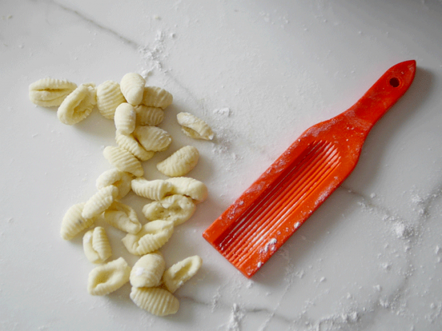

Ñoquis de papa
Faciles y rapidos para preparar en familia
Ingredientes
Paso a paso
Hacemos un corte horizontal por todo el contorno de la papa, en el video se ve bien, y las llevamos a una olla con agua. Cocinar hasta que al pincharlas se caigan.
Agregamos el huevo batido y la harina. No le vamos a agregar toda la harina de una, nos vamos a guardar un poco para ver cómo viene.
Las cantidades son más bien proporcionales, puede ser que la papa haya absorbido más agua o que el huevo sea más chico, así que vamos a agregar la harina de a poco.
No es necesario amar mucho, la idea es llegar a una masa unida y uniforme sin tocarla mucho.
Colocarlos en una placa enharinada sin que se toquen para que no se pegoteen. Y claro, también pueden hacerlos sin la herramienta y simplemente que queden en su versión más rústica.